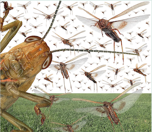

My exposure to British journalism has been a bit of a culture shock. When I write for the FT there are fact checkers, who don't just check but add value with charts. The sub-editor gets back with proposed redrafts to clear them with me. Apart from picking up some spelling errors, I've never encountered fact-checking, fact adding or the adding of any other value in Australia from any newspapers ever. You send in some copy and hope. If they want to chop it about, they do. If they're short of space your piece won't be carefully edited back. It will just be cut off with a bit of topping and tailing even if your most important points are edited out. I was writing a column for the Age and SMH Business section about eight years ago. It was supposed to come out every second Wednesday. It usually didn't. It just disappeared. I'd then email people and try to chase it up and get them to publish it. After a few months of this I was copying four different people into the emails and occasionally getting a reply and decided to give it away.And as I've gradually become aware, we don't really have columnists in Australia. We have journalists who 'get a column', and significant figures who occasionally write op-eds, but no one belting out really high-quality copy with some legitimate role in shaping national opinion.
I think this is true across the board, but it's well illustrated in economics. We have regular economic columnists some of them very informative and enjoyable to read, but they're not making their own strong contributions to the debate the way a Samuel Brittan, John Kay, Martin Wolf do (or, in the case of Brittan, did) — I expect I've missed out a few who've been around in the last decade or so (Brittan retired a while ago and died in 2020.) John Quiggin is the one who comes closest, but he's one of our most distinguished and engaged economists who writes columns, not an economic columnist and the Fin Review couldn't see their way clear to keeping him on.
Anyway, I wonder how long this lasts before the locust plague of profit maximisation comes for them too. In that light it depressed me when I came across this article in the Economist which prides itself on producing clear, insightful copy that you're glad you spent your time reading. Alas this was like one of those 'that was the year that was' TV shows at the end of the year. No harm in watching if you're bored, feeling nostalgic or want to watch some of your favourite clips, but otherwise full of sound and fury and signifying nothing.
Under the very unpromising title "The new normal is already here: Get used to it,
The era of predictable unpredictability is not going away" the article is below the fold. Oh well some journalist was told to write a review article for the year and so went through their paces. Oh — and I stopped halfway through, so perhaps it's really just unmissable beyond that point.
Dec 18th 2021
Is it nearly over? In 2021 people have been yearning for something like stability. Even those who accepted that they would never get their old lives back hoped for a new normal. Yet as 2022 draws near, it is time to face the world’s predictable unpredictability. The pattern for the rest of the 2020s is not the familiar routine of the pre-covid years, but the turmoil and bewilderment of the pandemic era. The new normal is already here.
Remember how the terrorist attacks of September 11th 2001 began to transform air travel in waves. In the years that followed each fresh plot exposed an unforeseen weakness that required a new rule. First came locked cockpit doors, more armed air marshals and bans on sharp objects. Later, suspicion fell on bottles of liquid, shoes and laptops. Flying did not return to normal, nor did it establish a new routine. Instead, everything was permanently up for revision.
The world is similarly unpredictable today and the pandemic is part of the reason. For almost two years people have lived with shifting regimes of mask-wearing, tests, lockdowns, travel bans, vaccination certificates and other paperwork. As outbreaks of new cases and variants ebb and flow, so these regimes can also be expected to come and go. That is the price of living with a disease that has not yet settled into its endemic state.
And covid-19 may not be the only such infection. Although a century elapsed between the ravages of Spanish flu and the coronavirus, the next planet-conquering pathogen could strike much sooner. Germs thrive in an age of global travel and crowded cities. The proximity of people and animals will lead to the incubation of new human diseases. Such zoonoses, which tend to emerge every few years, used to be a minority interest. For the next decade, at least, you can expect each new outbreak to trigger paroxysms of precaution.
Covid has also helped bring about today’s unpredictable world indirectly, by accelerating change that was incipient. The pandemic has shown how industries can be suddenly upended by technological shifts. Remote shopping, working from home and the Zoom boom were once the future. In the time of covid they rapidly became as much of a chore as picking up the groceries or the daily commute.
Big technological shifts are nothing new. But instead of taking centuries or decades to spread around the world, as did the printing press and telegraph, new technologies become routine in a matter of years. Just 15 years ago, modern smartphones did not exist. Today more than half of the people on the planet carry one. Any boss who thinks their industry is immune to such wild dynamism is unlikely to last long.
The pandemic may also have ended the era of low global inflation that began in the 1990s and was ingrained by economic weakness after the financial crisis of 2007-09. Having failed to achieve a quick recovery then, governments spent nearly $11trn trying to ensure that the harm caused by the virus was transient.
They broadly succeeded, but fiscal stimulus and bunged-up supply chains have raised global inflation above 5%. The apparent potency of deficit spending will change how recessions are fought. As they raise interest rates to deal with inflation, central banks may find themselves in conflict with indebted governments. Amid a burst of innovation around cryptocoins, central-bank digital currencies and fintech, many outcomes are possible. A return to the comfortable macroeconomic orthodoxies of the 1990s is one of the least likely.
The pandemic has also soured relations between the world’s two great powers. America blames China’s secretive Communist Party for failing to contain the virus that emerged from Wuhan at the end of 2019. Some claim that it came from a Chinese laboratory there—an idea China has allowed to fester through its self-defeating resistance to open investigations. For its part, China, which has recorded fewer than 6,000 deaths, no longer bothers to hide its disdain for America, with its huge death toll. In mid-December this officially passed 800,000 (The Economist estimates the full total to be almost 1m). The contempt China and America feel for each other will heighten tensions over Taiwan, the South China Sea, human rights in Xinjiang and the control of strategic technologies.
In the case of climate change, the pandemic has served as an emblem of interdependence. Despite the best efforts to contain them, virus particles cross frontiers almost as easily as molecules of methane and carbon dioxide. Scientists from around the world showed how vaccines and medicines can save hundreds of millions of lives. However, hesitancy and the failure to share doses frustrated their plans. Likewise, in a world that is grappling with global warming, countries that have everything to gain from working together continually fall short. Even under the most optimistic scenarios, the accumulation of long-lasting greenhouse gases in the atmosphere means that extreme and unprecedented weather of the kind seen during 2021 is here to stay.
The desire to return to a more stable, predictable world may help explain a 1990s revival. You can understand the appeal of going back to a decade in which superpower competition had abruptly ended, liberal democracy was triumphant, suits were oversized, work ended when people left the office, and the internet was not yet disrupting cosy, established industries or stoking the outrage machine that has supplanted public discourse.
Events, dear boy, events That desire is too nostalgic. It is worth notching up some of the benefits that come with today’s predictable unpredictability. Many people like to work from home. Remote services can be cheaper and more accessible. The rapid dissemination of technology could bring unimagined advances in medicine and the mitigation of global warming.
Even so, beneath it lies the unsettling idea that once a system has crossed some threshold, every nudge tends to shift it further from the old equilibrium. Many of the institutions and attitudes that brought stability in the old world look ill-suited to the new. The pandemic is like a doorway. Once you pass through, there is no going back. ■
Comments on the article.